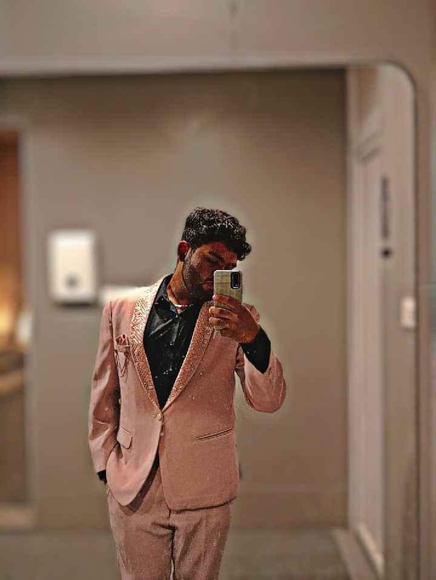

|
S AJENDHRA KRISHNA 550 diamond colony pollachi-642001 ph: 9843552593 email:ajendhra08@gmail.com |
 |
Visit My Website | My College | Email Me | Call Me | Facebook | LinkedIn | Instagram
As a first-year student, my primary goal is to build a strong academic foundation in my major. I aim to actively participate in campus organizations to develop my leadership skills. My next step is to secure a summer internship to gain hands-on industry experience. I plan to master core technical tools and earn professional certifications in my field. Ultimately, I strive to graduate with honors and transition directly into a competitive full-time role.To build a seamless bridge from academia to industry, I will actively participate in targeted networking events, connect with alumni mentors, and engage in collaborative, real-world team projects. Cultivating a robust personal brand online and optimizing my professional portfolio will ensure my technical skills stand out to top-tier recruiters. By pairing rigorous academic focus with proactive career strategy, I can confidently navigate highly competitive hiring landscapes, consistently adapt to evolving market demands, and establish a foundational trajectory for long-term career growth.To maximize my professional impact, I will seek out leadership roles within campus organizations and participate in industry-specific hackathons or case competitions. These experiential learning opportunities will sharpen my communication, critical thinking, and cross-functional collaboration skills—qualities that elite employers value just as much as technical expertise. Additionally, I plan to maintain a rigorous study schedule, leveraging peer study groups and faculty office hours to master advanced coursework and sustain a top-tier GPA. By taking this holistic approach, I will transform from an ambitious student into a high-potential professional ready to drive immediate value.
| EDUCATION | SCHOOL | BOARD | PERCENTAGE OF MARK | YEAR OF PASSING |
|---|---|---|---|---|
| HSC | Disha A Life School | ISC | 88.6% | 2026 |
| SSLC | Disha A Life School | ICSE | 80.0% | 2024 |